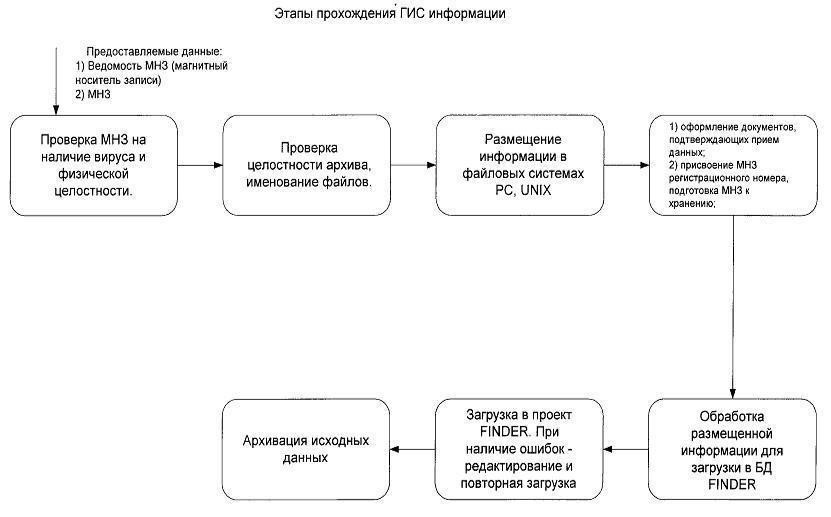
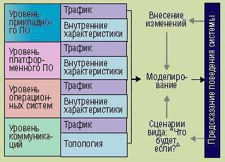

Лабораторная работа 3.
Изучение информации, циркулирующей в корпоративной информационной системе
Цель работы
Научиться анализировать информацию, циркулирующую в корпоративной информационной системе, научиться строить диаграмму информационных потоков.
Теоретическая часть
В 1997 году Системой управления ресурсами Ханты-Мансийского автономного округа было принято решение о создании в территориальном геологическом фонде цифрового архива первичной геолого-геофизической информации.
При создании архива использовались программные продукты фирмы Schlumberger GeoQuest: Finder, SeisDB и AssetDB. Все программное обеспечение функционирует под управлением СУБД ORACLE. На рис.1 представлена схема взаимодействия программного обеспечения, которое было использовано при создании архива.

О модели: Исходные файлы каталогизируются и хранятся в оригинальном виде. Для этого с поступающих на хранение файлов собирается идентификационная информация: оригинальное имя файла, тип содержащейся в нем информации и т.п. и заносится в специальную таблицу – каталог. Для работы с этим каталогом разработана специальная форма регистрации поступающей информации, позволяющая при необходимости легко найти и идентифицировать каждый конкретный файл.
Информация, с которой программное обеспечение работает в собственных форматах, также помещается в специальные структуры:
• полевые записи после демультиплексации в формате SEG-Y, окончательные временные разрезы и разрезы ОГТ в сохраненных амплитудах загружаются в систему архивирования SeisDB;
• общая информация по съемке, координаты пунктов взрыва и ОГТ по профилям, горизонты Т0, V, H по профилям, карты в сетках (grid) загружаются в систему Finder.
В базу данных загружена информация по:
• сейсмопрофилям – 71;
• временным разрезам – 219;
• подготовлен к загрузке и частично загружен материал по 7 сейсмопартиям;
• окончательно загружен и консолидирован материал по 1 сейсмопартии

Проведен контроль качества и анализ существующих и поступающих данных ГИС. Разработан ряд дополнительных процедур, позволяющих проводить контроль качества, подготовку и загрузку данных ГИС в пакетном режиме. Загружено кривых: 38 тыс. по 950 скважинам. Эта работа продолжается по мере поступления информации.
Кроме того, основными задачами территориального фонда геологической информации являются:
• государственная регистрация работ по геологическому изучению недр, выполняемых всеми организациями и предприятиями на территории Ханты-Мансийского автономного округа в соответствии с планами ГРР предприятий;
• государственный учет работ по геологическому изучению недр, сбор, систематизация и хранение неопубликованной геологической информации.
Моделирования и анализ корпоративных информационных систем
Среди основных требований, которые предъявляются к ИС, можно назвать следующие:
• Адекватность. ИС должна соответствовать задачам, для решения которых она создана или создается.
• Масштабируемость. Эту адекватность ИС должна сохранить при развитии организационной структуры и росте информационной нагрузки, не требуя при этом серьезного изменения архитектуры системы.
• Расширяемость. Нужно, чтобы ИС могла развиваться, позволяя исключать и модифицировать старые, добавлять новые компоненты, что должно обеспечиваться резервами стационарных систем (например, резервом ресурсов и 15-летней гарантией работоспособности структурированной кабельной сети).
• Надежность. Сбои в работе критически важных приложений, простой которых приводит к финансовым потерям, недопустимы.
• Сохранность инвестиций. При модификации системы следует максимально использовать ранее приобретенное и установленное оборудование и имеющиеся компоненты системы.
• Экономическая эффективность. Прибыль (непосредственная или косвенная), получаемая за счет использования ИС, должна превышать затраты на создание и развитие ИС.
• Безопасность. Необходимо обеспечить защиту ИС от некорректных или неавторизованных действий пользователей, от несанкционированного доступа.
Исходные данные для построения модели предоставляет информация о топологии ИС (ее коммуникационной составляющей), о внутрисистемном трафике, зависящем от уровня и внутренних характеристик моделируемых объектов (аппаратной и программной составляющих). На основе анализа полученной модели можно прогнозировать поведение системы в описанном состоянии. При необходимости в модели отражаются вносимые изменения до их реального осуществления. Использование сценариев позволяет осуществлять детальный многовариантный анализ влияния вносимых изменений как в целом на ИС, так и на ее отдельные составляющие. Упрощается процесс установки нового распределенного программного обеспечения в реальную сеть, который также можно предварительно проанализировать с помощью модели существующей ИС. При этом могут быть выявлены потенциальные проблемы и найдены пути их устранения, не оказывающие какого-либо воздействия на реальную систему (схема 2.). Таким образом, из множества путей модификации системы с минимумом затрат может быть выбран оптимальный.
Моделирование ИС Моделирование представляется наиболее эффективным путем поддержания ИС в оптимальном состоянии по целому ряду параметров

Состав систем моделирования COMNET и OPNET

Для разработчиков ИС, или, как их принято сейчас называть, проектных и системных интеграторов моделирование - это единственный способ получить объективное представление о работе системы до ее реального воплощения в жизнь. Причем это представление не ограничивается естественным вопросом, сколько это будет стоить. Результаты моделирования представляют собой источник конкретных цифр, конкретные показатели производительности, которые станут большим козырем в общении с заказчиком и позволят ответить на вопрос, как вложения заказчика в систему могут себя оправдать. Кроме того, моделирование позволит разработчику системы избежать многих проблем на этапе реализации проекта и при последующем сопровождении.
Сеть, состоящая из десяти рабочих станций и одного файл-сервера на базе Microsoft Windows NT, не требует моделирования. Однако администратор большой системы, использующей различные стеки протоколов, операционные системы и распределенные приложения, зачастую сталкивается с трудно разрешаемыми проблемами, особенно при модернизации, например при установке приложения типа клиент-сервер или переходе с 10BaseT на 100VG AnyLAN. А как обстоят дела с прогнозами на будущее? Попытайтесь ответить на несколько вопросов. Можете ли вы, как администратор, предсказать прирост трафика в вашей системе за год, месяц, квартал? Каким образом этот прирост повлияет на вашу сеть? Не возникнут ли при этом узкие места? Ответы вы сможете получить, лишь построив модель системы и подвергнув ее детальному анализу.
Модель состоит из двух частей: описания топологии информационной системы и данных о трафике. Эта информация может быть либо получена из внешних источников - систем мониторинга и управления сетями, либо введена непосредственно пользователем с помощью интуитивно понятного графического интерфейса.
Требования к программному и аппаратному обеспечению системы COMNET:
• технология моделирования в системе COMNET;
• моделирование и анализ сетей на основе Microsoft Windows NT;
• моделирование и анализ распределенных систем обработки и хранения данных;
• моделирование и анализ систем видеоконференций;
• моделирование систем групповой работы и почтовых систем;
• решение проблем маршрутизации в сетях с использованием средств моделирования;
• моделирование и анализ глобальных сетей;
• моделирование и анализ беспроводных технологий;
• моделирование и анализ медицинских информационных систем.